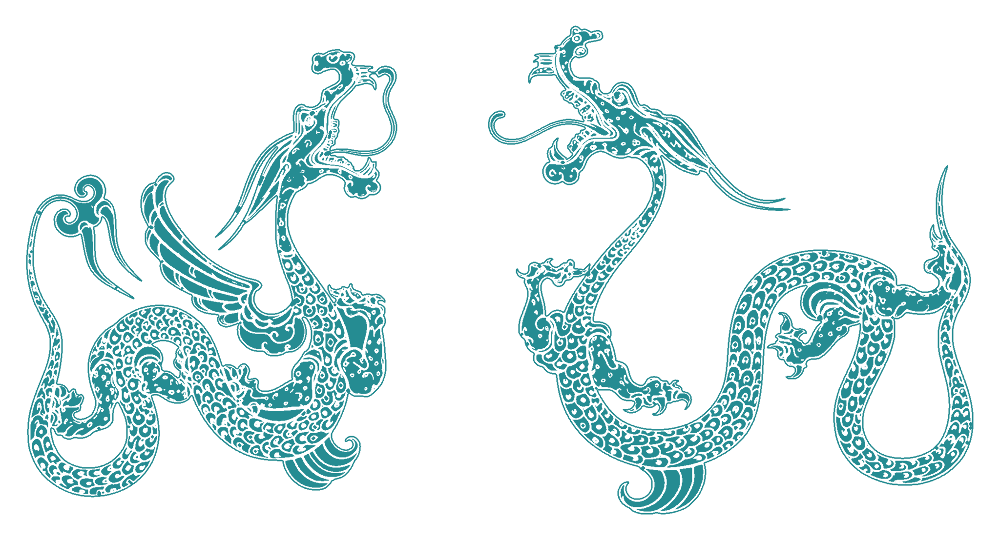

帛画符号的当代视觉叙事VISUAL RESEARCH & DESIGN / 2026

01 / THREE REALMS
由天入地，
展开一帛宇宙。
从整体，到局部。
选择一个世界，阅读其中的图形。
01 / HEAVEN孔雀青 · 单色提取
图形名称沿用本次设计素材命名；页面说明侧重可见形态与当代设计转译。
02 / SYMBOL ATLAS
形有来处，象有新意。
将宏大的图像拆解成可以细读的符号。
点击任一图形，查看形态与设计思路。
13 组图形点击图形 · 进入细读 ↗
没有找到对应的图形。
图像观察 从轮廓、对称、方向和组合关系入手。 设计转译 记录图形进入海报、书籍与视觉系统的方法。
03 / DESIGN TRANSLATION
从帛上的线，
到今天的设计语言。
形态提取 → 单色归纳 → 色彩转译 → 设计应用
让一套图形，走向更完整的视觉表达。
形态提取 / FORM EXTRACTION

飞龙双龙 · 保留轮廓与内部纹理01 → 04 / A VISUAL SYSTEM
取其形，
续其生。
- 01
解构 · 阅读图像
从三界结构梳理人物、神兽、器物及其组合关系。
- 02
提取 · 统一形态
保留辨识度与纹样细节，以孔雀青建立统一图形语言。
- 03
转译 · 建立色彩
以单色提取为基础，延展展板中的紫、蓝与暖色搭配。
- 04
应用 · 连接生活
将图形带入书籍、折页、文创与系列海报。
COLOR LANGUAGE
孔雀青为骨，
万象之色为翼。
网页以孔雀青、帛白与朱红组织阅读；
多色转译与应用成果见下方中期展板。
孔雀青#288F94
帛白#F6F4ED
朱红#EF4B2B
靛紫#5350CF
浅紫#B59CE5
04 / CREATIVE ARCHIVE
从研究，走向万象。
完整记录中期阶段的视觉探索。
图形、色彩与应用，在此汇合。
DESIGN IN PROGRESS / 中期成果帛间万象
帛间万象
THE UNIVERSE ON SILK
以帛画图像为线索，将三界结构中的视觉元素重新梳理，形成从图形提取到设计应用的完整探索。
- 图形系统
- 三界整体与局部符号的单色提取
- 色彩转译
- 原画色彩与当代配色的视觉对照
- 应用探索
- 书籍、折页、文创及系列海报
设计 / 邢远康
指导教师 / 李金涛
武汉工程大学 · 艺术设计学院